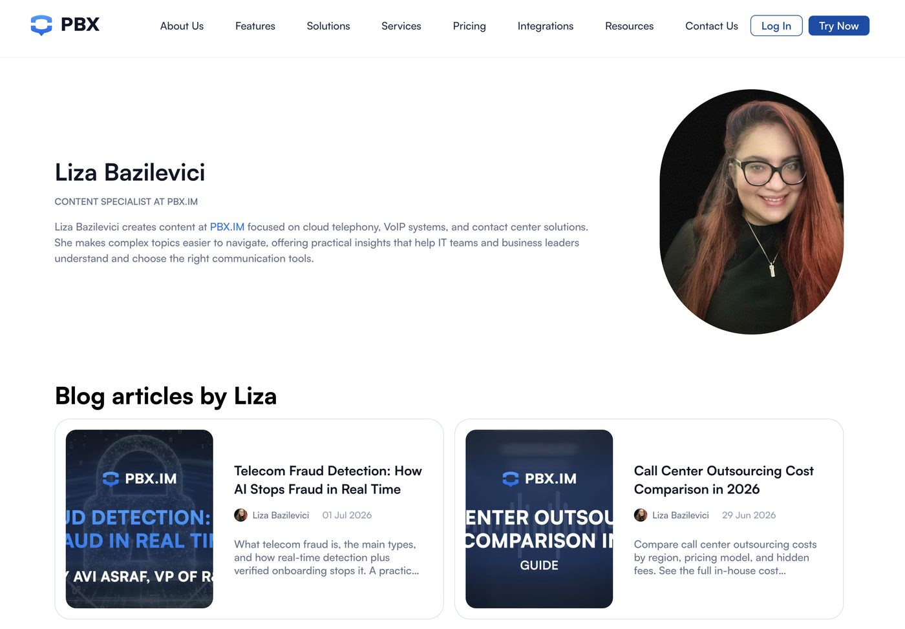

I joined the PBX.IM team at BinarCode as Content Manager, and the job turned out to be less about writing and more about keeping four different content streams moving at once without any of them going stale. PBX.IM is a cloud phone system for small and mid-sized businesses, covering VoIP, call routing, SMS, and Microsoft Teams integration. My day-to-day split across documentation, blog content, site pages, and social.
I worked alongside SEO and paid media experts and a designer, with a Scrum Master keeping the team on an Agile, sprint-based rhythm. That structure shaped the work more than people usually expect from a content role: briefs, priorities, and page requests showed up on a sprint cycle, not on my own schedule.
Documentation, tied to what engineering was actually shipping
The product moved fast, and documentation had to move with it. I worked directly with the development team on the docs at pbx.im/documentation, writing new pages for features as they shipped and going back to rewrite older pages when the underlying feature changed. That meant sitting close to engineering, asking enough questions to actually understand what changed technically, then translating that into steps a non-technical operator could follow. Patching an old doc with a line or two was never the move. If the feature changed enough, the whole page got rewritten.
Blog articles from SEO briefs
Most of my blog work started with a brief from the SEO team, not a topic I picked myself. I'd take the brief, the target keywords, and the intent behind them, and turn that into an article that actually answered the question someone was searching for. The skill here was holding two things at once: cover what the brief asked for, and still write something a real reader would want to finish. A keyword list on its own does not make a good article. You have to reconstruct the actual question and answer it well. Everything I published there is collected at pbx.im/blog/author/liza-bazilevici.

Feature, service, and site pages
I also wrote and updated copy for feature pages, service pages, and various site page variations, again from SEO briefs, working closely with design in Figma so the copy and the layout got built together rather than copy getting dropped into a finished template. Some of these pages were standalone. Others were part of a larger templated set, like country-specific pages that reused the same structure with different local details. Writing for that kind of template is a different exercise than writing a single article: the copy needs to hold up across dozens of variations without sounding recycled.
Social media
Social was the shortest feedback loop of the four. A recurring piece of it was presenting new features as they shipped, which meant working with engineers to put together product videos, then using AI tools to edit them into something short enough for a feed. Different rhythm, different format constraints from the rest of the work, same underlying job: take the product story and shape it for wherever it needed to land.
Where AI actually helped
AI tools were part of the daily process, not a shortcut around it. I used them to speed up first drafts, work through repetitive documentation updates, and generate starting points for templated page variations. None of that skipped the editing step. Everything got reviewed against the brief, checked for accuracy against the actual product, and rewritten where the AI output was generic or just wrong. Speed only helps if someone is still checking the work before it ships.
What the role taught me
Working across documentation, SEO-driven content, site pages, and social at the same time forced a kind of discipline I hadn't needed as sharply before: knowing which hat I was wearing for a given piece, and not letting one format's habits leak into another. A doc page and a blog post solve different problems for the reader, even when they're about the same feature. Keeping that distinction clear, brief after brief, is most of what the job actually was.